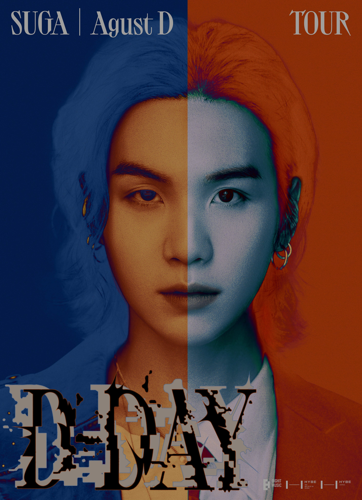
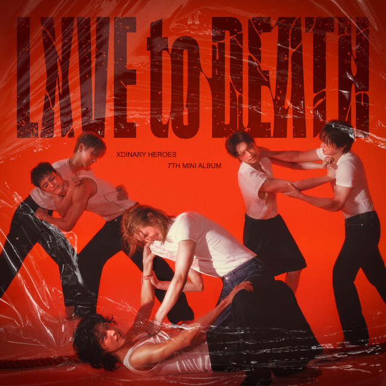
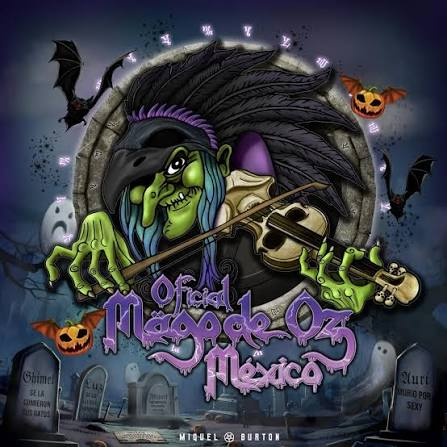

| TOP 4 ARTISTAS DESTACADOS | NOTICIAS | PELICULAS | |||
|---|---|---|---|---|---|
|
RM Kim Nam-joon nació el 12 de septiembre de 1994 en Dongjak-gu, Corea del Sur. Antes de su debut, era un rapero underground el cual usaba el nombre artístico "Runch Randa"; lanzó varias canciones y colaboró con el conocido rapero Zico. Era parte del grupo surcoreano de hip hop underground Daenamhyup, el cual consiste de Marvel J, l11ven, Supreme Boi, Iron, Kyum2, Kidoh, Samsoon, Illipse, DJ Snatch y él. El grupo tuvo actividad desde 2009 hasta 2013, cuando RM dejó su participación en el grupo para concentrarse en BTS, aunque en una llamada con Supreme Boi, dijo que algún día volvería a participar con Daenamhyup, aunque algunos miembros del grupo continuaron participando sin RM. RM tiene muchos logros académicos notables. Alcanzó un 850 en el TOEIC cuando estaba en secundaria, probablemente debido por haber estudiado en Nueva Zelanda. También estuvo en el top 1.3% de la nación en los exámenes de entrada a la universidad en lengua, matemática, idiomas extranjeros y ciencias sociales; además, tiene un CI de 148. Además de su lengua materna, habla fluidamente inglés y japonés, ya que continuó estudiando japonés luego del debut de BTS, ya que todos los miembros de Big Hit reciben clases básicas de dicho idioma. También vio múltiples veces el sitcom estadounidense Friends para ayudarle a aprender inglés.
|
Noticias RM |
Pelicula RM |
|||
|
 |
Agust D Min Yoon-gi nació el 9 de marzo de 1993 en la ciudad de Daegu, al sureste de Corea del Sur. Empezó a interesarse por la música en quinto de primaria después de ver una actuación de Stony Skunk en televisión, y fue así como empezó a escuchar a grupos hip-hop como Epik High. En segundo curso de la escuela media actuó por primera vez en un escenario interpretando el tema «Go Back» del grupo Dynamic Duo. A los trece años comenzó a aprender a utilizar la tecnología MIDI y a escribir sus propias canciones. A los diecisiete años y gracias a un mentor, entró a formar parte de un grupo de rap underground llamado D-Town. Mientras formaba parte de esta agrupación produjo la canción «518-062», que es un tema conmemorativo a la Masacre de Gwangju. En una entrevista con la revista Grazia declaró: «Cuando trabajaba en el estudio, componía canciones o hacía ritmos e incluso los vendía. Después empecé a rapear y a hacer actuaciones de forma natural. Mientras trabajaba allí era difícil pagar la comida o el transporte. (...) Pero aunque era difícil quería hacer música, así que lo soportaba» En 2010 Suga participó en las audiciones Hit It llevadas a cabo por Big Hit. Quedó segundo en la competición que se celebró y entró a formar parte de la compañía el 7 de noviembre de 2010.
|
Noticias Agust D |
Pelicula Agust D |
||
|
 |
XDINARY HEROES Xdinary Heroes (en hangul, 엑스디너리 히어로즈; romanización revisada, Egseudineori Hieorojeu) es un grupo masculino surcoreano, formado en 2021 por JYP Entertainment. Está compuesto por cinco integrantes: Jungsu, Gaon, O.de, Jun Han y Jooyeon. Originalmente compuesto por seis miembros, Gun-il salió del grupo el 13 de agosto de 2026. La banda debutó el 6 de diciembre de 2021 con el lanzamiento del sencillo digital «Happy Death Day». El nombre es una abreviación de «Extra Ordinary Heroes» (en español, Héroes extraordinarios), que significa «cualquiera puede convertirse en héroe». Los puestos de la banda son: Jungsu: Teclado y voz | Gaon: Guitarra eléctrica, rapero y voz | O.de: Sintetizador y voz | Jun Han: Guitarra eléctrica | Jooyeon: Bajo y voz principal.
|
Noticias Xdiz |
Sitio de Cine |
||
|
 |
Mago de Oz Mägo de Oz es una banda española de folk metal fundada en Madrid el 7 de julio de 1988 por Txus di Fellatio. La banda saltó al éxito en 1998 con el álbum La leyenda de La Mancha, llegando a las listas de éxitos musicales de España con canciones como «Molinos de viento» o posteriormente, con su álbum Finisterra, «Fiesta pagana». La fama del grupo y su éxito, tanto en la prensa especializada como en los medios convencionales a nivel nacional e internacional, especialmente en los lineales de cintas de gasolinera y en Hispanoamérica, se hizo aún mayor tras la publicación del disco Gaia en 2003, siendo el primer trabajo de una trilogía conceptual completada con los discos Gaia II: La voz dormida en 2005 y Gaia III: Atlantia en 2010, de igual o mayor éxito. Desde 1998 (La Leyenda de la Mancha) hasta 2010 (Gaia III: Atlantia) es considerado como la época dorada de Mägo de Oz, siendo 2005 y 2006 (Gaia II: La Voz Dormida) el punto más alto de fama y reconocimiento de su historia. En el 2008, se les entregó el disco de diamante por superar el millón de copias vendidas de toda su obra discográfica solamente en España. Se calcula que habrían vendido más de tres millones de discos entre España y Latinoamérica hasta el año 2013. A lo largo de su carrera, Mägo de Oz ha sufrido numerosos cambios de integrantes, siendo Txus di Fellatio y Carlos Prieto «Mohamed», los únicos miembros originales que continúan en la banda.
|
Noticias Mago |
Sitio de Cine |
||